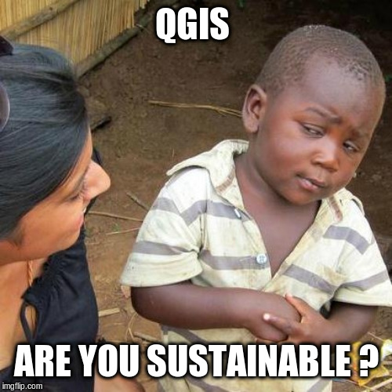
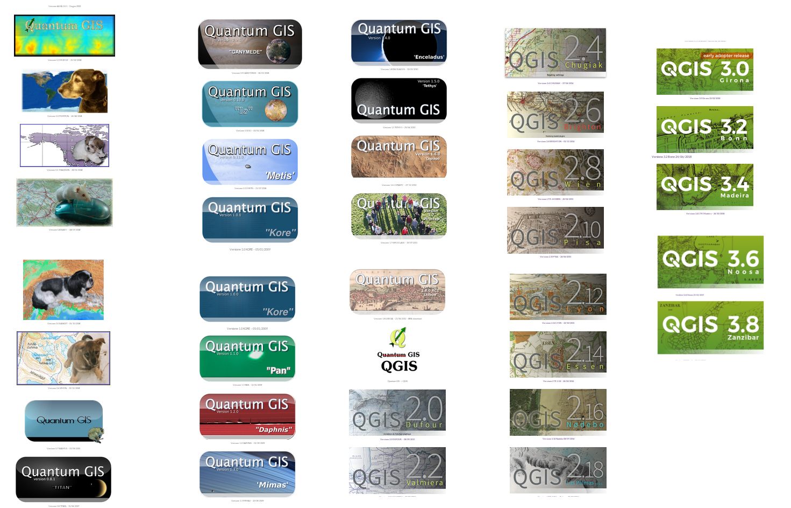
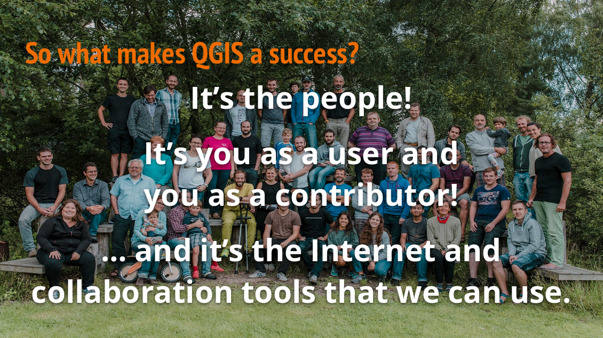
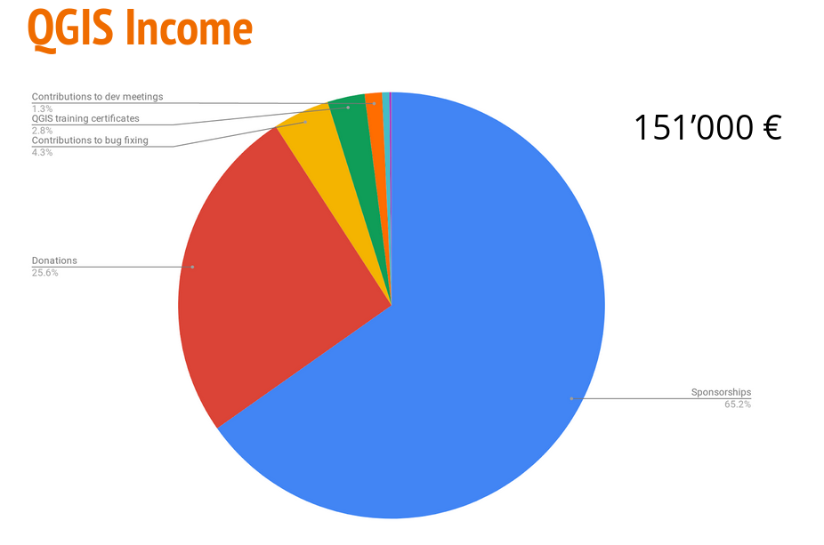
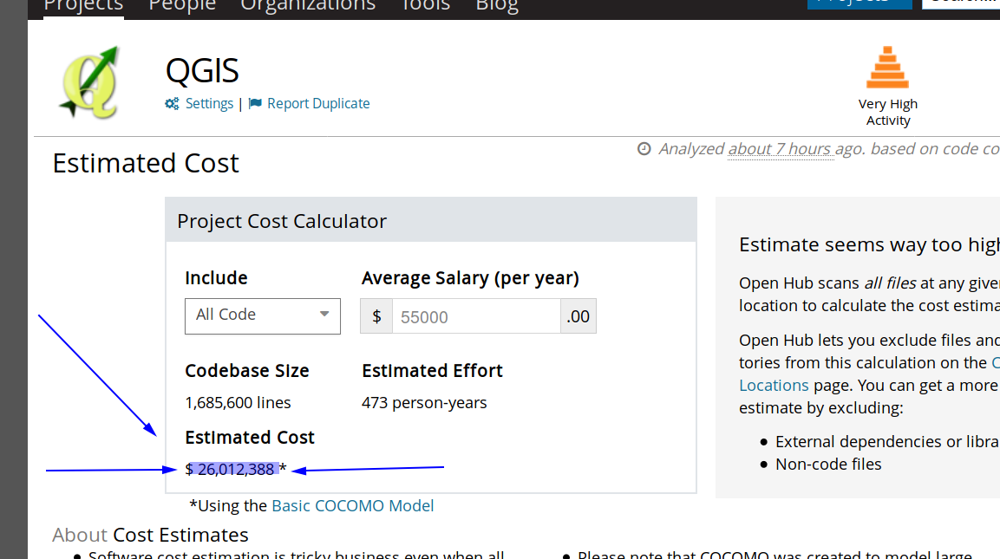
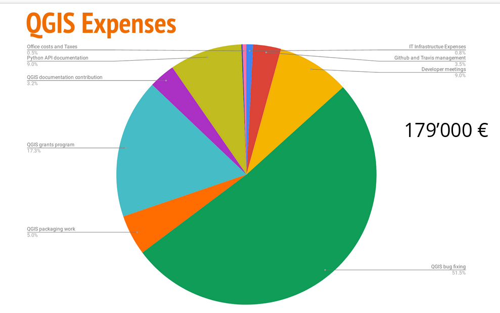
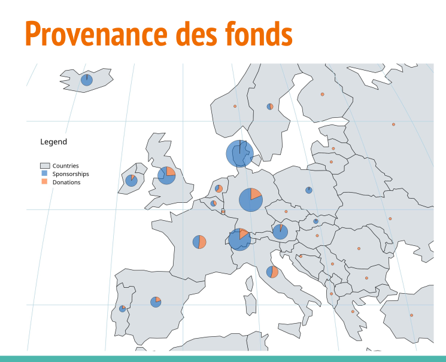
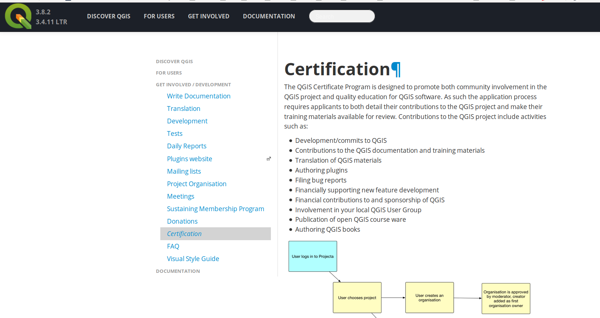
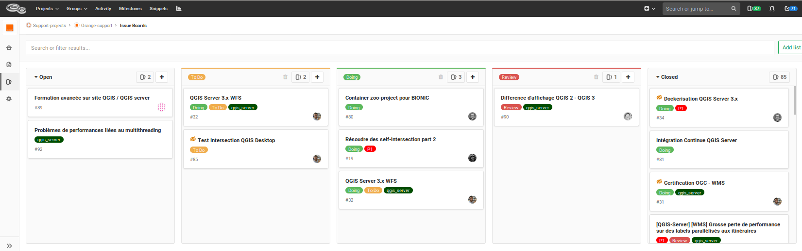
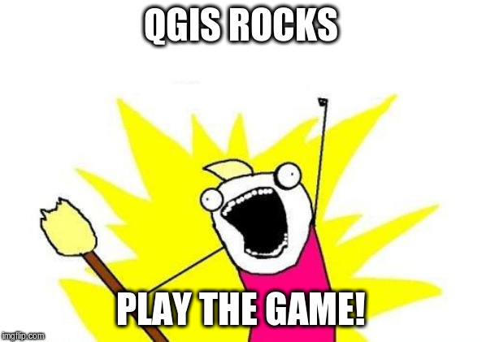

Do open source contributors do more than they should ?
QGIS as a reference project to find sustainable ways to rock!
/me
Régis Haubourg
French guy passionate with geospatial stuff
Open Source changed my life - litteraly
Former GIS data admin (water basin agency) - SQL saved my life
Former agronomic engineer - GIS turned into a passion
Open Source expert at Oslandia QGIS & PostGIS fan
OSGEO French local chapter president ...slowly becoming a nerd
OSLANDIA
French company started in 2009
Open source and geospatial only
GIS - 3D - DATA/AI
OSLANDIA
15 collaborators
100% remote working
100% open source
horizontal and transparent governance
some QGIS and postGIS core commiters..
Open Source communities
QGIS
PostGIS
iTowns (3D web framework)
python, SQL, C++, javascript, data science
A reference Free software community project in the world

No more a young children


What is a happy contributor ?
Eat
Have a social life
Pay the rent
Raise kids
Buy a neat new 64 Go RAM to compile QGIS faster ;-)
..
Get stickers
Do not burnout
History of QGIS contribution
20020 - Gary Sherman releases 0.0.1
Paid services very early. Most started being paid between 1.6 (2010) and 2.0 (2014)
Currently a whole commercial ecosystem exists in most countries.
https://www.qgis.org/en/site/forusers/commercial_support.html

Funds for QGIS.org
but that's only a fraction of it
26 Million dollars !!

let's say 20% of it was funded, 5.6 Million dollars might reflect the real transactions
(totally random estimate)
Sponsors (2019)

Expenses of QGIS.org budget (2018)

Underfunded tasks ?
- Infrastructure
-
- Packaging
-
- Documentation
Underfunded tasks
Communication Marketing
- blog / maintain welcome page feed
- explain (versions, LTR vs release, roadmap)
Bug triage
Quality Assessment (real testing during freeze periods)
Code review
French self bashing

New trends !
(in France at least)
CellPhone, optic Fiber, traditional communication, Internet Provider
Embrassing open source totally - Top Bottom !
Long history with OW2 cluster.
Support contract with Oslandia shown as a model
Allowed:
QGIS server refactor
QGIS server OGC certification
QGIS server perfs improvements
Security audit and hardening
Big cities
Lyon Métropole - migration to postgreSQL & QGIS & support contracts
Grenoble Métropole - migration to postgreSQL & QGIS & support contracts
Water companies
Worlwide water distribution
Challenging its internal habits with Inner Source
Prototyping QGIS for desktop apps and QGIS server on the cloud for web mapping
Public research
Open source generation is taking the power
cooperation
centralized data and databases
wonderful mix of open data, open hardware and open source
You ?
How many use QGIS?
How many know the actual roadmap of QGIS?
(fixed schedule / 4 months releases / 1 month minor versions / 1 year LTR)
How many test QGIS and report issues and feedback during freeze period?
On your own real production use cases.
How many of you have been blocked by an unfixed bug
How many have support contracts ?
How many have subsribed to a user group ?
How many have tried to subscribe or sponsor QGIS.org?
Sponsoring OSGEO chapter or local user group is a valid YES
How many of you start courses explaining the economics of our contributive model ?
How many of you took a fraction of the proprietary support contracts amount into open source contribution
(how many of you struggle to get back budgets, where buying licence is easier?)
How to improve this?
Sponsoring & donations
Funding meetings, bug fix sprints, grant applications, infrastructure
Spread the word, act in local chapters. Convince your boss. And the boss above him.
Local chapter / local QGIS user group
Create one
Get money from subscriptions and events
Use a part of it for
sponsoring
grant application
Raise new contributors
Make it fun !
Raise baby contributors
Certification programs
Certificate trainees
- fund QGIS.org (already 10k € and >500 certicate issues)
- explain contributive model to trainees
- get more contribution from training providers
http://changelog.qgis.org/en/qgis/certifyingorganisation/list/

Support contracts
Time to:
Time to understand issues
Time to prepare new features ideas
Time to help in deploying / configuring
Fast
Give credit,security and insurance to IT departement / Decision makers

Homework duty
Energy can't be only on dev's side.
Fight to find budgets.
Fight to resist bureaucratic rules
Out of your comfort zone?
Dare, try.
Most people are true supporters but
most think there is a big corp underneath
Advertise the OSGEO model.
Make it serious and credible
IT. WORKS.
DO IT :)
Congratulations, you probably became a very efficient contributor at this stage!

Any questions ?
Slides and sources available at :
https://github.com/Oslandia/presentations//2019/foss4g/qgis_and_sustainable_foss_r_haubourg/slide.md